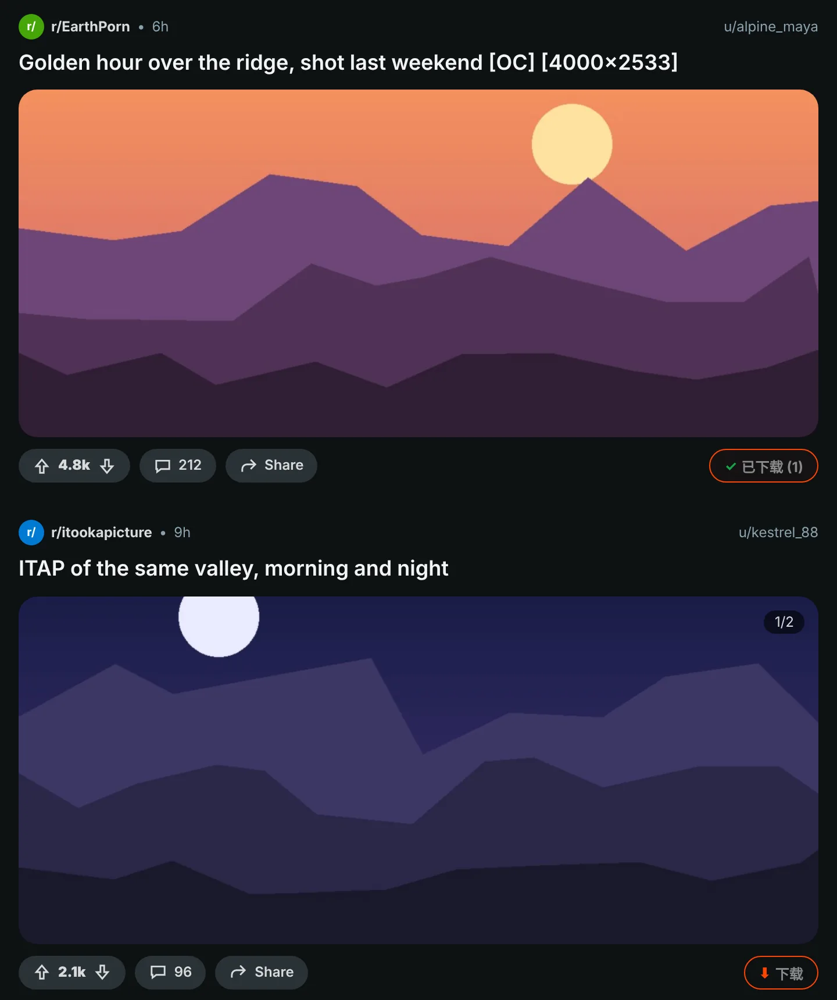
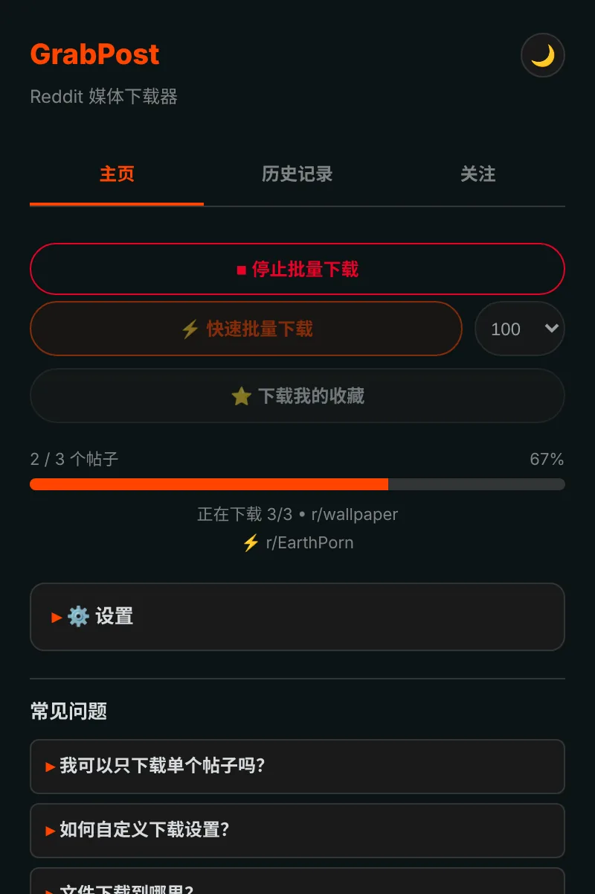
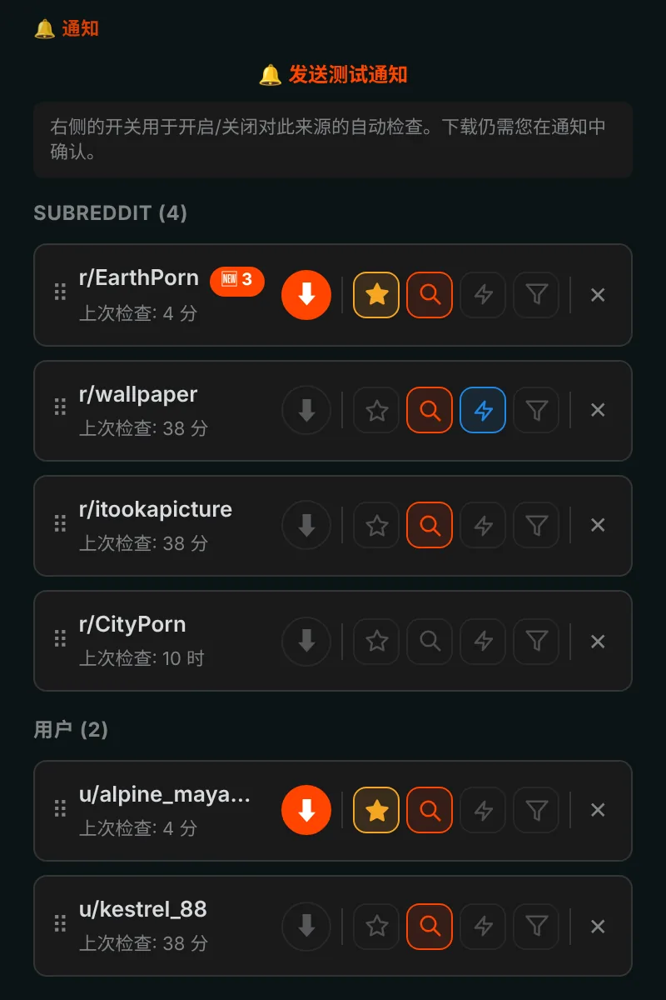
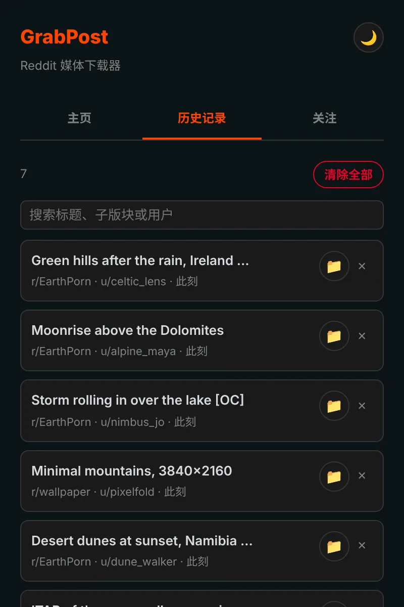

Reddit 上的任何内容，一键保存。
GrabPost 会在每个 Reddit 帖子上加一个下载按钮。视频保留声音，图集完整保存，整个子版块或个人主页可以在你做别的事情时自动下载。免费，不做追踪。
尚未上架商店。从 GitHub 安装大约只要一分钟。

按一下帖子上的按钮。
每个帖子都有按钮
橙色按钮位于每个帖子的投票和分享栏中：首页信息流、个人主页、搜索结果都有，新版和旧版 Reddit 都支持。图片、图集、GIF、Redgifs 和 Imgur 链接都能下载。按 Alt+Shift+D 可下载屏幕中间的帖子。

整页批量下载
快速模式直接从 Reddit 数据读取子版块、个人主页、多版块或搜索结果，无需滚动页面。已有的内容会跳过，遇到以前下载过的帖子就会停下。你收藏的帖子也能这样下载。

关注之后，新帖自己找上门
关注子版块和用户，有新媒体时会收到通知，也可以让它自动下载。可按媒体类型、NSFW 或关键词筛选。最多 10 个收藏可以每 5 分钟检查一次。

每次下载都有记录
历史记录列出你保存过的内容并支持搜索，已经拥有的帖子会在 Reddit 上标出。备份会自动生成，重新安装也不会清空你的列表。

细节都已考虑周全
带声音的视频
Reddit 把声音放在单独的文件里。GrabPost 会找到它，并直接在浏览器中合并。
文件夹和文件名由你决定
文件夹可用 {subreddit}/{user}，文件可用 {date}_{title} 这样的模板。
不会重复
即使有人把同一张图片转发到别的子版块，也能认出来。
可与 IDM 共存
下载管理器无法抢走文件、丢掉你设置的文件夹名称。
对 Reddit 有耐心
Reddit 要求暂停时，GrabPost 会按要求的时间等待，然后继续。
15 种语言
扩展和这个页面都说你的语言。
你下载什么，只与你有关
- 无分析、无追踪、无需账号
- 只与 Reddit 及其媒体托管网站通信
- 历史记录和设置都留在你的浏览器里
- 源代码公开在 GitHub 上
一分钟装好
GrabPost 还没有上架 Chrome 网上应用店，所以需要手动安装。支持 Chrome、Edge、Brave、Opera 等基于 Chromium 的浏览器。
- 从 GitHub 下载最新的 grabpost-v…zip，解压到一个会长期保留的文件夹。
- 打开
chrome://extensions，在右上角开启 开发者模式。 - 点击 加载已解压的扩展程序，选择解压后的 grabpost 文件夹。
- 打开 Reddit，帖子上会出现橙色按钮，点击工具栏图标即可打开 GrabPost 面板。
更新时，替换同一文件夹中的文件，然后点击 GrabPost 卡片上的重新加载按钮。设置和历史记录都会保留。
Firefox：附加组件商店版本即将推出。在此之前，可以通过 about:debugging 临时加载 Firefox 版 zip。
常见问题
GrabPost 免费吗？
是的，所有功能都免费。如果它帮你省了时间，可以请开发者喝杯咖啡。
文件保存在哪里？
保存在浏览器的下载文件夹中，你选择的子文件夹里。默认是 Reddit Downloads，文件名以子版块名称开头。
需要登录 Reddit 吗？
只有下载你收藏的帖子和有年龄限制的社区时才需要。其他功能无需账号。
重新安装会丢失历史记录吗？
不会。开启浏览器同步后，设置和关注列表会自动恢复。系统还会自动保存一个备份文件，GrabPost 也能根据浏览器的下载列表重建历史记录。
能在 Edge、Brave 或 Opera 中使用吗？
可以。任何能加载已解压扩展程序的 Chromium 浏览器都能使用 Chrome 版 zip。
下载 GrabPost
尚未上架商店。从 GitHub 安装大约只要一分钟。